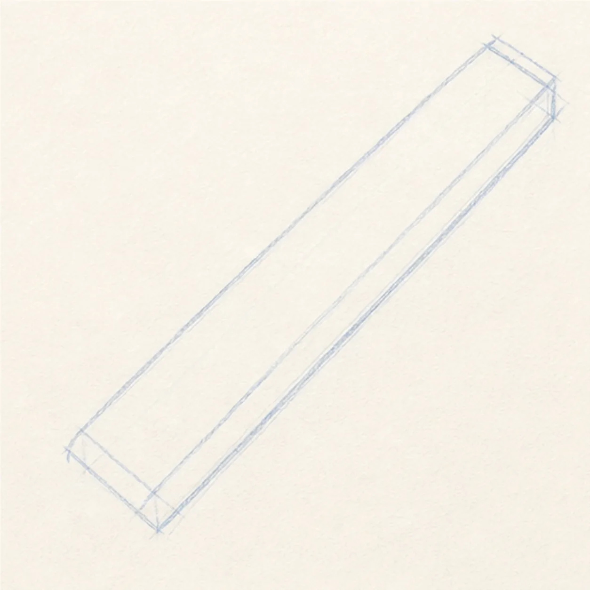
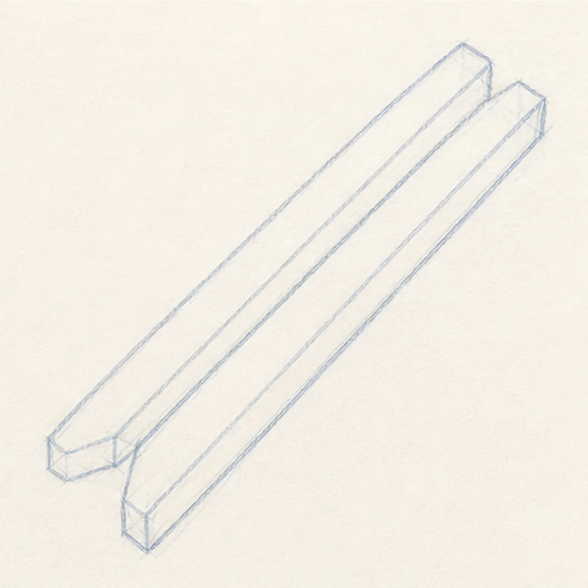
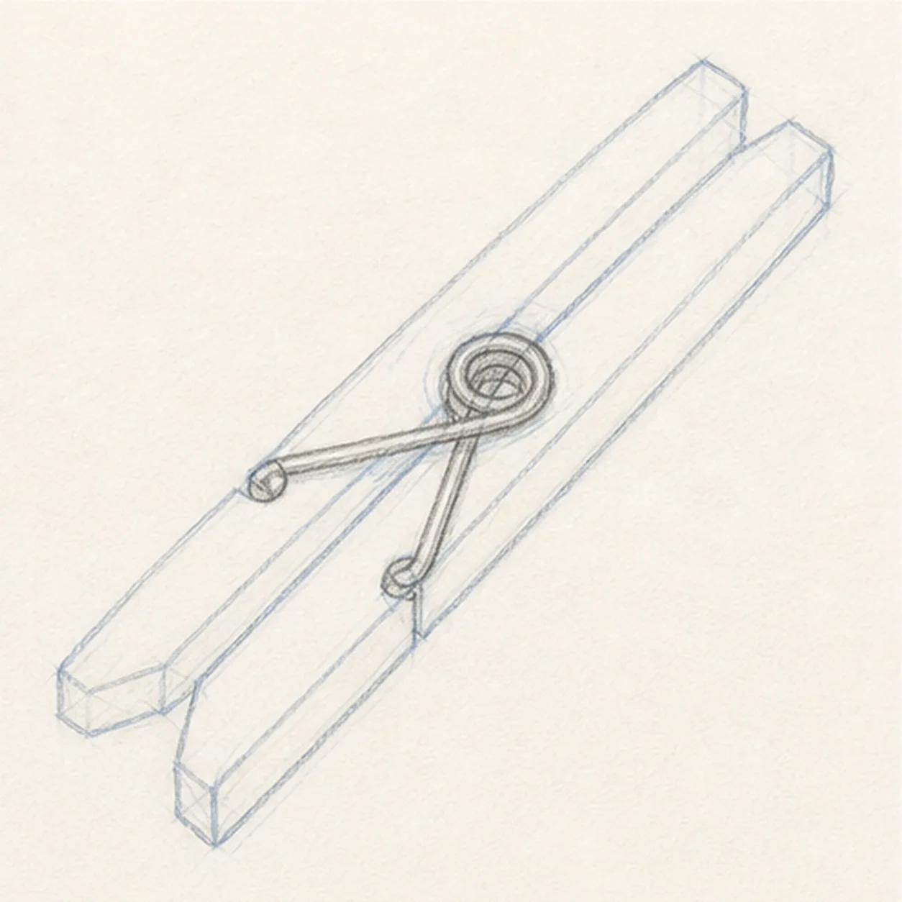
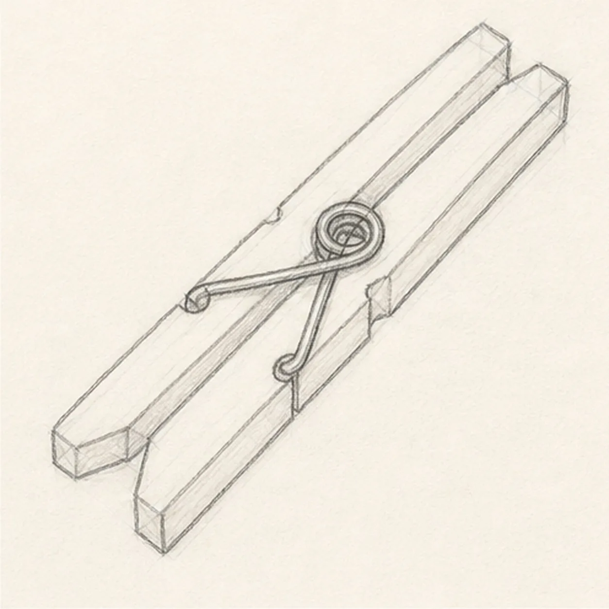
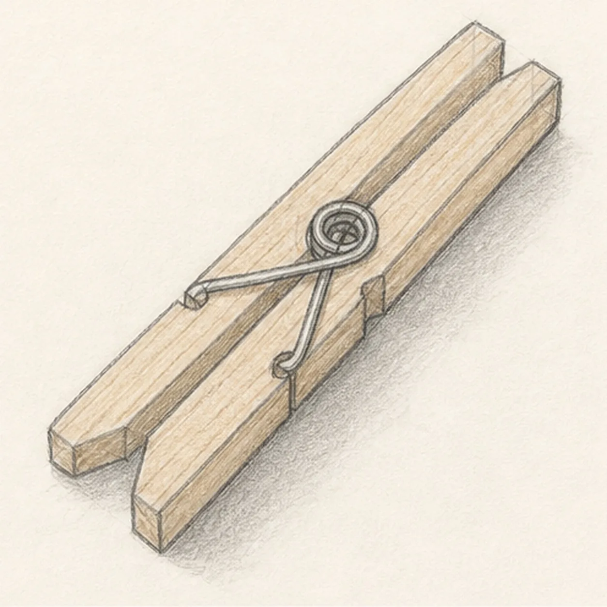

From the archive
Let's draw a wooden clothespin
Treat this as one small practice round: build the subject lightly, notice the shapes, then darken only the lines that help the finished sketch.
-
01

Lay in the long guide
Draw one long, light diagonal guide for the clothespin body, tapering it slightly toward the jaw end.
Sketch tip: Ghost the long edge before touching the pencil down. One relaxed stroke keeps this simple object from looking kinked.
-
02

Split the wooden halves
Add a narrow gap down the middle, then shape the two wooden halves and the pinched jaw tips.
Sketch tip: Compare the negative space between the halves. If the gap widens too much, the spring will feel off-center later.
-
03

Set the spring
Place a small coil near the middle and draw the curved wire arms crossing into the wooden halves.
Sketch tip: Draw the coil as a few nested curves, not a perfect machine part. The readable position matters more than exact metal loops.
-
04

Carve the notches
Add the small side notches around the spring area and clean up the jaw tips.
Sketch tip: Use light pressure while cutting the notches. They should interrupt the long sides without breaking the whole silhouette.
-
05

Add grain and tone
Run a few grain lines along the wooden halves, add warm tan pencil tone, and place a soft shadow under the diagonal pin.
Sketch tip: Pull the grain lines in the same direction as the wood. Parallel texture makes the clothespin feel solid.
-
06

Finish the clothespin sketch
Darken the keeper contours, clarify the spring and wire arms, deepen the existing grain, warm tone, and soft shadow.
Sketch tip: Stop before adding a clothesline or extra laundry. The two jaws, spring, and grain are enough to make the object clear.